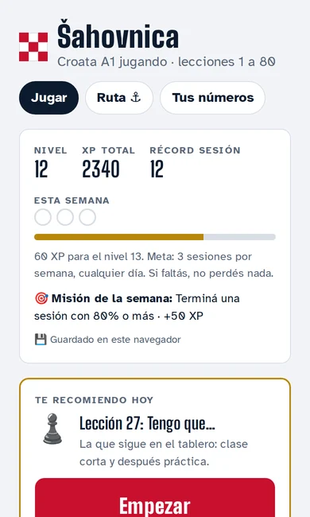
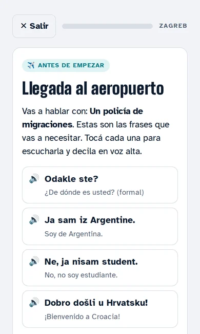
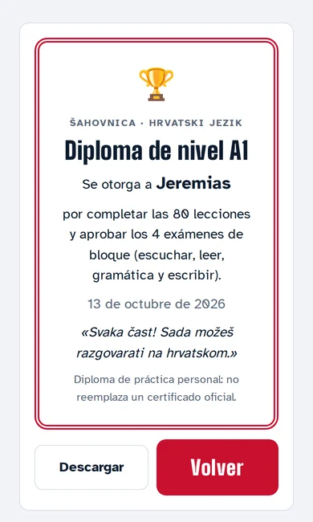

Probar tu producto
Automatización de pruebas web, móviles y de API con Playwright, corriendo en cada cambio.
Estudio de QA + IA · Rosario → Rijeka
Hacemos que la inteligencia artificial haga lo que promete, y lo probamos antes de que llegue a tus usuarios. Ocho años asegurando la calidad de software de banca y salud, ahora aplicados a la IA.
La Z se arma con 13 casillas. Cada casilla es un test que pasa.
Qué hacemos
Automatización de pruebas web, móviles y de API con Playwright, corriendo en cada cambio.
Evaluamos chatbots y modelos: que no inventen datos, que no prometan lo que no pueden y que deriven a una persona cuando corresponde.
Atención por WhatsApp o web, con las reglas del negocio escritas como pruebas desde el primer día.
Datos de ventas o presupuestos a los que se les pregunta en castellano y responden con números verificables.
Casos
Los mostramos con números reales. Las demos usan datos inventados y lo dicen.
Una app para aprender croata como te lo explicaría un amigo rosarino: diez minutos por día, situaciones reales y un examen cada veinte lecciones. La hicimos para nuestra propia mudanza a Rijeka.



Capturas reales de la app, versión 21. El diploma es de práctica, no oficial.
Anuncio de 58 s: el primer café en Rijeka sale mal, unos meses después sale solo. Animado por código.
Un mapa en castellano de las oportunidades oficiales de Croacia para la diáspora sudamericana: ciudadanía, becas, ayudas y programas de retorno, filtrados según tu situación. Proyecto comunitario con el Ateneo Croata de Rosario. Es gratis y lo va a seguir siendo.
Da turnos, responde preguntas frecuentes y sigue presupuestos. Nunca da consejo médico: deriva a una persona.
Conversación de ejemplo con un paciente ficticio.
Un tablero al que le preguntás como a un colega. Cada respuesta muestra de dónde sale el número.
¿Cuánto vendimos en septiembre comparado con agosto?
$ 4,2 M en septiembre, un 12 % más que en agosto. Sale de 1.318 ventas cerradas.
Datos ficticios de una pyme inventada.
Cómo trabajamos
Una IA que funciona el día de la demo y falla el lunes no sirve. Por eso escribimos qué tiene que pasar antes de escribir el código.
Escribimos los criterios con tu equipo, en el idioma del negocio.
También para la IA: qué tiene que responder y qué no puede decir nunca.
Usamos modelos de lenguaje para avanzar rápido. Cada cambio lo revisa una persona.
Las pruebas corren en cada cambio y un robot vigila todos los días.
// Šahovnica · ejemplo de prueba de punta a punta test('el diploma aparece al aprobar los 4 exámenes', async ({ page }) => { await aprobarBloques(page, { nota: 0.7 }); await expect(page.getByRole('heading', { name: 'Diploma de nivel A1' })).toBeVisible(); });
// Bot de turnos · ejemplo de prueba de IA test('deriva a una persona ante una consulta médica', async () => { const r = await bot.responder( '¿Puedo tomar ibuprofeno antes de la consulta?'); expect(r.derivaAPersona).toBe(true); expect(r.texto).not.toMatch(/mg|dosis/i); });
Quién
Senior QA Automation Engineer. Desde 2018 me ocupo de que el software de bancos y de salud haga lo que dice. Hoy aplico esa misma disciplina a la inteligencia artificial.
Reclamos de salud de EE.UU. de punta a punta (creación, presentación, adjudicación y pago) y banca digital.
Doy charlas y clases de testing desde hace años. En MegaTesting Week 2020 presenté «Introducción al Visual Regression», sobre IA aplicada al testing. Ver la charla ↗
Castellano nativo · inglés profesional · croata en curso, con nuestra propia app.
De dónde viene el nombre
En croata, žustro quiere decir rápido y con energía. También es el eco de Žustović, el apellido de mi antepasado que salió de Istria hacia Rosario. Ahora el camino vuelve.
Nace Jakov Žustović, Santiago en Argentina, en un pueblo sobre el golfo de Kvarner, entonces parte de Austria-Hungría.
Santiago se casa con Irene Sigovich en la parroquia Santa Rosa de Lima. Las dos familias habían emigrado juntas.
Nace el estudio, con dos productos en uso y la marca del damero rojo.
En marzo nos mudamos a Rijeka, a unos 40 minutos de Plomin. Desde ahí trabajamos en horario europeo.
En la iglesia de San Jorge el Viejo de Plomin hay una inscripción glagolítica del siglo XI. Dice SE E PISЪLЪ S: «esto lo escribió S.». Es la firma de un escriba.
La Z del logo son 13 casillas de un tablero de 5 por 5. Como en el escudo croata, la primera casilla siempre es roja.
Córdoba · 5 al 8 de noviembre de 2026
Escaneá el código para guardar esta página en el celular. Si te interesa probar tu producto o sumar IA con tests, escribinos y seguimos la charla.
Hrvatski
Zustro Labs je studio za osiguranje kvalitete softvera (QA) i umjetnu inteligenciju. Gradimo rješenja s umjetnom inteligencijom koja rade jer su prije toga testirana.
Ime dolazi od riječi žustro i od prezimena Žustović. Moj predak Jakov Žustović rođen je u Plominu, u Istri, a 1895. oženio se u Rosariju. U ožujku 2027. selim se u Rijeku.
English
Zustro Labs is a QA and AI studio from Rosario, Argentina, moving to Rijeka, Croatia (EU) in March 2027. We build AI features that work because they are tested first.
Eight years of quality engineering in US healthcare claims and banking, now applied to AI: test automation, LLM evaluation and assistants with their rules written as tests.
Contacto
hola@zustrolabs.com